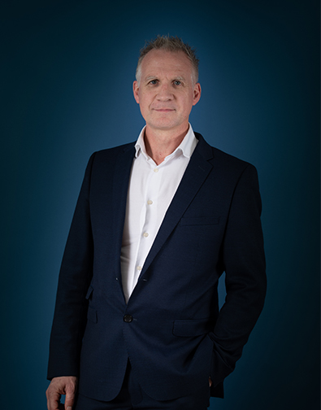

-
Martin Goddard
Director & Co-Founder
Goddard Littlefair Director and Co-founder Martin Goddard drives the growth of the business and manages the interface with our leading-name hospitality and developer clients. Martin’s passion for design is evident to all and his ease with spatial concepts and willingness to sketch things out for clients is always combined with a profound understanding of business strategy and operational realities. As an expert in his field, Martin brings not only an international perspective to bear, but insights from long industry experience at the highest end of the field.
Martin also travels widely and regularly attends major hospitality conferences, where he is often invited to give thought leadership, sitting on industry panels at, for example, IHIDCF in Vienna and the Independent Hotel Show in London in 2017. He has been a judge at both the WIN Awards and the Restaurant and Bar Design Awards.
-
Jo Littlefair
Director & Co-Founder
Goddard Littlefair Director and Co-founder Jo Littlefair is a designer-at-large for the company, bringing inspiration from her travels into the studio and sharing her passion for new and exciting dining, dwelling and hospitality experiences. Her curious and observant nature quickly recognises coming evolutions in consumer, industry and design trends. Jo is a great listener, both for clients and the internal team. Her particular focus is on delivery, ensuring that the essence of a concept has always been fully evoked and that all the softer details and touchpoints meet her exacting standards.
Jo is regularly asked to write and speak about innovations in consumer behaviour, as well as in developments in luxury market fabrics, furniture and colour, for publications such as Interior Design Today, FX, SPACE, HotelBauJournal and the Interior Design Yearbook. In 2017 Jo was a panellist at FOCUS and invited to be a judge for the Surface Design Awards.
-
Richard McCready-Hughes
Creative Director
Goddard Littlefair Creative Director Richard McCready-Hughes ensures the highest design values and maximum creativity on all our projects, from concept to delivery, and is committed to getting the best out of our talented studio team. Notable residential and hospitality projects that have benefitted from his eye include the South Bank Tower Show Apartment, a gold winner at the 2016 London Design Awards and 2017’s complete refurbishment of the Principal Edinburgh Charlotte Square Hotel.
Richard oversees the whole design process, but always relishes the concept phase and his initial exposure to the client vision. He considers the design process an exercise in interpretation and his great experience, coupled with his natural sense of style, ensures that the final environments we deliver not only please, but delight. In 2017, Richard was asked to judge a wide range of design schemes in the independent hospitality sector for the Design Vision Style Awards.
-
Tom Blackshaw
Senior Associate
Senior Associate Tom Blackshaw is a hospitality and high-end residential specialist, who graduated in 2000 and then worked in London for an initial five-year period on varied hospitality projects before moving to Australia. For the next 13 years, whilst based in Sydney, Tom worked on award-winning projects throughout the Asia-Pacific region – including Australia’s largest new-build hotel, the Darling Harbour Sofitel – for hotel brands including Hyatt, Hilton, Sheraton, Accor, Marriott, Starwood, IHG and Shangri-La, as well as on luxury residential developer projects in Australia and Indonesia.
Tom’s core strength is planning and the operational side of delivering projects. He especially enjoys the harmonious dovetailing of these aspects into exciting final designs and involvement on projects right up to cutting the ribbon. Tom also enjoys working with trades on-site and believes that having the greatest respect for everyone involved in a project helps bring about the most holistic and harmonious end results.
-
David Lee Hood
Senior Associate
Senior Associate and architect David Lee Hood joined Goddard Littlefair in 2013 and heads up the studio’s architectural offer. As a flexible all-rounder, David splits his energies equally between hospitality projects, including international hotel and restaurant schemes, such as the Restaurant & Bar Design Award-winning venue, The Printing Press for Principal or the award-winning refurbishment of The Gleneagles Hotel, and major residential developments for clients such as St Edwards and St James, part of Berkeley Group.
David’s flexibility, capability and breadth of experience sees him involved in every aspect of architecture and design across our projects, but always with a creative focus. He relishes variety, from client-facing presentations to project-managing and problem-solving on site. David studied architecture in Newcastle and Glasgow and took his RIBA Part III once his career was already well underway at a number of leading London signature-designer studios, where his work has always been focused on the high-end sector.
-

Graham Stanmore
Associate
Associate Graham Stanmore is a highly-experienced designer and hospitality expert, who has run his own company, as well as working for a number of industry giants in UK hospitality design and project management, over the course of a 30-year career. Graham has experience in retail and leisure, but the majority of his project work spans every aspect of hotel interiors, covering the design of guest rooms, meeting rooms, bars, restaurants, lobbies and public spaces for brands and operators including Millennium, CIT Group, Paramount, Stakis, Crowne Plaza, Hilton, Jumeirah Hotels and Resorts and Medina Hotels, right across the globe.
Whilst Graham loves getting major projects to the completion stage, his real passion is for concept design, the early stages of visualisation and the exploration of client briefs. Graham also enjoys drawing by hand and, away from the office, pursues a parallel career as a fine artist working both in portraiture and abstract landscapes.
-
Lucy Robinson
F&B Associate
Lucy Robinson joined Goddard Littlefair in 2017 as an F&B associate, working on major hotel and hospitality schemes in the studio. Lucy came to the company with an established F&B specialisation, covering restaurant and bar projects for major London agencies and a number of prominent signature chefs and operators, including Oliver Peyton of Peyton & Byrne, D&D and Vivek Singh.
Lucy loves the concept stage of projects above all and always listens very carefully to briefs and also to what is being said between the lines. She works on projects from the earliest concept stage, as well as managing every aspect of their development, from budgeting and technical drawing to FF&E and on-site management. She loves bringing concepts to life, ensuring the atmosphere and details of a new project are absolutely right and tries to eat out at least once a week to keep track of any new culinary and interiors trends.
-
Steve Wilson
Associate
Steve Wilson joined Goddard Littlefair in 2016, working on high-end residential and spa projects, including One Blackfriars, as well as a number of major hotel projects. His experience lies in high-end residential and hospitality projects in locations across Europe and the Middle East, as well as North Africa and Asia, for leading hotel brands such as Hilton, Hyatt, Corinthia and Intercontinental.
Steve is very much an all-rounder, working from concept design to project management and delivery. He particularly enjoys the interior architectural side of projects, overseeing teams and working on project co-ordination with clients and consultants, as well as the satisfaction of creating perfect fine-detailing, even when only visible under close inspection. Steve is always on the look-out for new materials and innovations and considers sketching a total joy. He is a great advocate for the power of a sketch to communicate concepts quickly, especially to non-designers.
-
John Beattie
Junior Associate
Junior Associate and architect John Beattie joined Goddard Littlefair in 2017, directly from Farrells, where he worked for four years on a number of major residential schemes, including the prestigious 800-unit, £500m Chelsea Waterfront project. John qualified with both a BA and an MArch from Newcastle University, before working locally in Sunderland for several years on housing projects at varying levels of the market, including pioneering carbon-neutral social housing.
John works closely with client and consultant teams on projects, planning, resourcing, advising on programming and procurement and working closely right through to construction. His aim is always to make projects as efficient as possible and he loves to learn continuously from other skillsets, particularly on site, as one of the many hands that make a successful project. John is never happier than when he gets a complex scheme over the line.
-
Neil Osborne
Head of Procurement
Neil Osborne is Head of Procurement at Goddard Littlefair, offering clients an extra service in terms of efficient, cost-effective and centralised procurement of all FF&E products and operational services and equipment (OS&E) on large-scale hotel projects. Neil also works on procurement for our high-end residential developments, including early-stage show apartments and marketing suites.
Neil’s background saw him move from insurance to procurement and he now has over a decade of specialisation in the 5* hotel market, having worked on deluxe projects such as The Langham and St Regis Hotels & Resorts. Neil’s tight scheduling and programming management skills ensure that operational standards, design integrity, product functionality and financial responsibility work together to everyone’s complete satisfaction. His ambition is to add value to Goddard Littlefair and continue to grow our procurement offer.
-
Anthony Bisnath
Finance Manager
Anthony Bisnath joined Goddard Littlefair in 2019 as company Finance Manager. He works closely with our directors and guides them in making sound business decisions by producing and analysing all financial forecasting and budgeting. Anthony has worked in finance for almost 20 years, spending 14 of those with four iterations of the same leading, London-based company which provides packaging design and printing services for companies in the media industry, including Microsoft, Sony Games, Disney and Universal. While the company grew through mergers and acquisitions, Anthony’s career also evolved from accountancy to a role as Commercial Finance Manager, evaluating business opportunities, managing contract negotiations and supporting the creative division in its endeavours to expand internationally.
Anthony then spent four years with construction industry supplier Sphere8, specialists in resin flooring, managing the company’s entire finance function and modernising its financial processes. Along with strong business acumen, he brings a great eye for continuous improvement and is always looking to identify sustainable opportunities, deliver efficiencies and drive growth.
-
Our Team
The Goddard Littlefair studio is made up of a highly-experienced and international team of architects, interior and FF&E designers, along with other related specialists.
The 50+ team is led and managed by three directors, including the company’s founders, seven associates and a number of senior designers.
-
Martin Goddard Director & Co-Founder
-
Jo Littlefair Director & Co-Founder
-
Richard McCready-Hughes Creative Director
-
Tom Blackshaw Senior Associate
-
David Lee Hood Senior Associate
-
Graham Stanmore Associate
-
Lucy Robinson F&B Associate
-
Steve Wilson Associate
-
John Beattie Junior Associate
-
Neil Osborne Head of Procurement
-
Anthony Bisnath Finance Manager